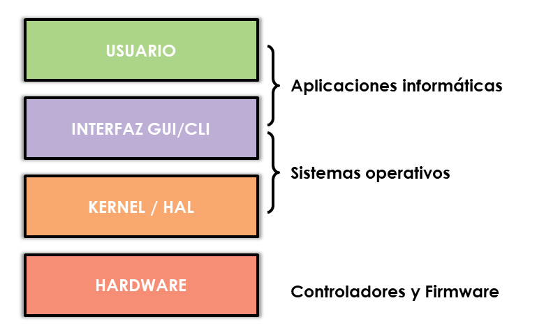
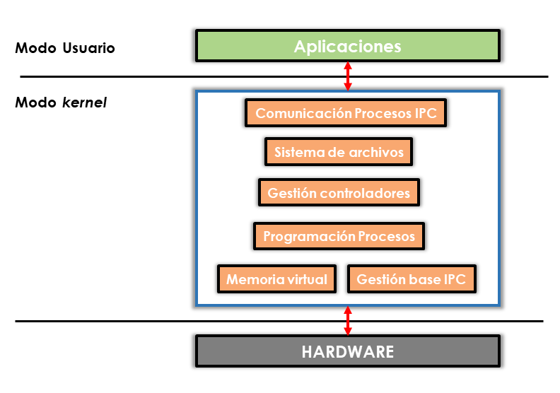
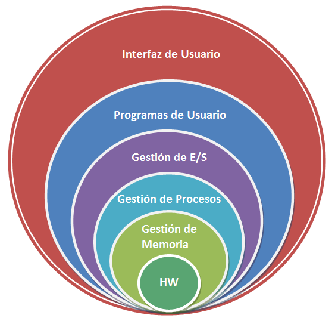
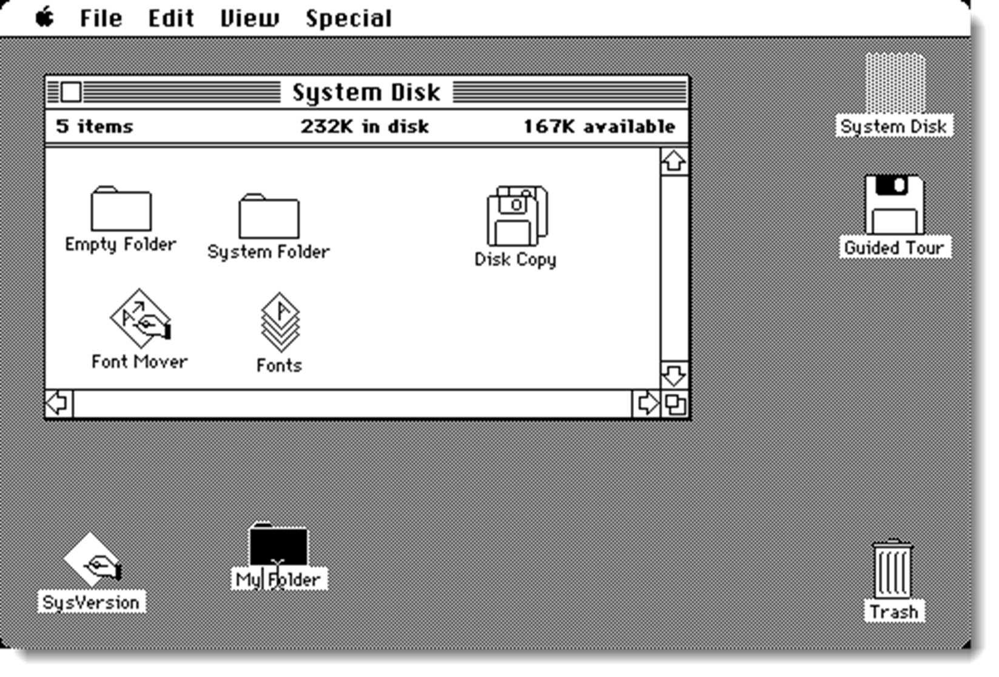
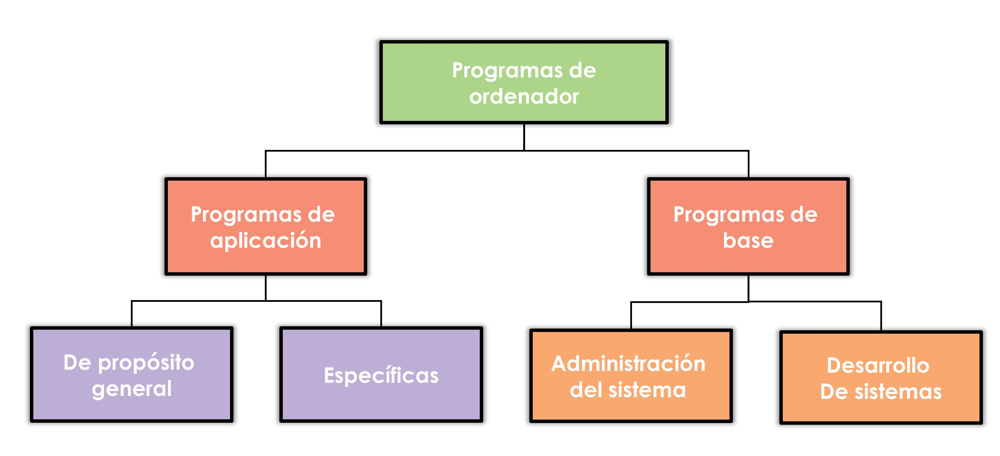

Estructura
Estructura de un sistema informático
Un sistema informático es un conjunto de elementos hardware, software y humanos diseñados para un propósito en concreto. Todos estos elementos se relacionan entre sí creando sinergias orientadas al propósito para el que fue diseñado y construido. Un ordenador que ejecuta un programa de contabilidad conforma en sí mismo un sistema informático, pero también se puede formar un sistema informático formado por cientos de ordenadores conectados en red. Dentro del sistema informático existen, al menos, tres subsistemas que lo componen:
- El subsistema físico o hardware
- El subsistema lógico o software
- El subsistema humano
El primer subsistema, el físico, está compuesto por todos aquellos elementos tangibles. Entre ellos hay que destacar los ordenadores (cada componente del equipo es una pieza del sistema), los periféricos, los elementos de interconexión (cableado, routers, switches, puntos de acceso) y aquellos que dotan de seguridad al sistema (SAI, paneles de acceso, cámaras de video-vigilancia entre otros). Se trata pues del esqueleto de nuestro sistema y va a determinar tanto la potencia de cálculo del sistema como la capacidad operativa del mismo.
El segundo subsistema lo componen todos los programas que se encuentran instalados en los equipos, servidores, elementos de interconexión y seguridad. Su cometido es la de ofrecer las herramientas necesarias para desempeñar la función del sistema informático en el que está inmerso. Es un subsistema crítico y es necesario mantenerlo actualizado con las últimas revisiones de software, especialmente en lo que se refiere al sistema operativo, controladores y software de seguridad. Este subsistema también se divide dependiendo de la función del programa:
- Aplicaciones informáticas, que son las encargadas de ofrecer herramientas al subsistema humano para desempeñar sus tareas. Aplicaciones como procesadores de texto, hojas de cálculo, diseño asistido por ordenador, cartografía, compresión de archivos y un vasto etcétera.
- firmware, que se encuentra integrado directamente en un dispositivo de hardware y que ofrece la posibilidad de configurar este dispositivo de manera muy concreta. El sistema BIOS (Basic Input Output System) de las placas base, la interfaz de los routers y/o switches o el acceso a las cámaras de seguridad son algunos ejemplos de este tipo de software.
- controladores (drivers), que son los encargados de identificar el hardware e informar de las características del mismo al sistema operativo. El uso inadecuado de un controlador puede ocasionar que la capacidad de nuestro software quede mermada o inutilizada por completo.
- sistema operativo, encargado de transformar el hardware en recursos para ofrecérselos a las aplicaciones. En los siguientes puntos trataremos este elemento de forma pormenorizada.

El tercero y no menos importante, lo forman el conjunto de usuarios que utilizarán las herramientas que están a su disposición. De suma importancia es el perfil de estos usuarios y las competencias informáticas de las que dispongan. Existen diferencias en plantear un sistema para una empresa de desarrollo de aplicaciones en donde a los usuarios se les presupone unos altos conocimientos en informática, que para una oficina de correos, en donde presumiblemente no los tendrán.
Otro factor muy importante es la formación y educación de los usuarios. Saber que acciones pueden o no pueden desempeñar, cómo actuar ante una posible amenaza, aprender a resolver ciertos problemas o realizar actividades formativas para utilizar un determinado programa, son solo algunas de las características que el técnico encargado del sistema deberá afrontar.
En definitiva, el objetivo final del sistema informático determinará la composición de cada una de sus partes así como la relación existente entre ellas. Tanto requerimientos de hardware, software como humanos no serán los mismos si se diseña un sistema para una pequeña gestora de contabilidad o un laboratorio de investigación. Es trabajo del técnico dotar a cada subsistema de las características necesarias para dar servida cuenta de los objetivos a desempeñar.
La elección de cada uno de estos elementos no solo debe estar orientada a la consecución de los objetivos, sino a la compatibilidad entre los diferentes subsistemas. El sistema operativo debe ir en consonancia con las capacidades de cómputo del hardware. Los programas deben ser compatibles con la elección del sistema operativo. Deben existir controladores específicos para este sistema operativo o el hardware no rendirá según lo esperado. En definitiva, no resulta sencilla la conjunción de todos los elementos para que todo sistema funcione orquestado y dé respuesta a las expectativas de los usuarios.
Para ello, tan importante es el diseño como el mantenimiento, revisión y actualización del sistema informático. Esta tarea recaerá en los técnicos cuya misión es establecer un programa de mantenimiento y revisión que consistirá revisión de las actualizaciones de software (especialmente el de seguridad), comprobación y limpieza del hardware, análisis del sistema de comunicación para identificar posibles fallos o cuellos de botella, la formación constante del subsistema humano, sobre todo en funciones de seguridad, revisión de los registros diarios del sistema y visor de eventos entre otras tareas. Es necesario la creación de un plan de mantenimiento para prevenir un mal funcionamiento del sistema.
El Sistema Operativo
El ordenador es un sistema programable formado por un conjunto de elementos hardware que necesitan instrucciones que le indiquen cómo utilizar los recursos. El conjunto de instrucciones o programas es lo que conocemos como software. Un ordenador sin software que lo programe no posee utilidad alguna, salvo la meramente decorativa. Un sistema operativo es un conjunto de programas que, ordenadamente relacionados entre sí, contribuyen a que el ordenador lleve a efecto el trabajo encomendado. Para realizar esta tarea, transforma el hardware disponible en recursos que ofrece al resto de componentes software para que puedan desempeñar sus tareas. Pero ya no solo es el encargado de dotar de esos recursos al subsistema software, sino también al humano. Para cualquier usuario sería costoso acceder directamente a los recursos que ofrece el hardware de un ordenador e intentar trabajar con él directamente. Además de la dificultad, una instrucción mal escrita podría producir serios problemas en el hardware, la pérdida de información o incluso el deterioro de alguno de los componentes del ordenador. Una tarea sencilla como guardar las modificaciones de un fichero, puede convertirse en una verdadera pesadilla para cualquier tipo de usuario. Por lo tanto, los sistemas operativos deben dotar de dos características fundamentales para facilitar el uso del hardware de un ordenador:
- seguridad, debe actuar contra cualquier manipulación accidental o premeditada que pueda dañar la información contenida en el hardware, dañar el propio hardware o provocar un funcionamiento indeseado del sistema. Existen ciertas instrucciones que pueden parar la máquina y otras que realizan operaciones directamente sobre el hardware. El sistema operativo evita que el hardware quede en manos de los programas (aplicaciones). Para ello proporcionan dos estados, llamados estado protegido (kernel), en el cual se ejecuta el sistema operativo, y estado no protegido (usuario), que es el destinado a la ejecución de los programas de aplicación. De esta manera se impide que los programas puedan tener contacto directo con el hardware, o puedan forzar un incorrecto funcionamiento del sistema.
- abstracción, debe ocultar los detalles de más bajo nivel intentando dar a los niveles superiores una visión más sencilla, global y abstracta. Dota al usuario de operaciones para manipular dichas estructuras ocultas, desconociendo por completo la gestión interna de las mismas. Gracias a la abstracción, los sistemas operativos enmascaran los recursos físicos, permitiendo su manejo con funciones más generales que ocultan las básicas, constituyendo verdaderos recursos virtuales.

- Desde el punto de vista del usuario, el sistema operativo proporciona servicios que no están presentes en la máquina subyacente. Estos servicios incluyen las facilidades de carga y ejecución de programas, interacción entre el usuario y los programas, permitiendo que se ejecuten varios al mismo tiempo, gestión de la comunicación y almacenamiento de datos y programas, entre otros muchos.
Arquitectura de un sistema operativo
Estas dos funciones principales de los sistemas operativos, seguridad y abstracción, nos adelantan la estructura funcional de la mayoría de los sistemas operativos existentes. Al igual que el resto de ámbitos de la informática, los sistemas operativos ha sufrido una evolución dependiente, principalmente, del hardware en el que se asentaban. Cada nueva estructura de procesador debía tener su propio sistema operativo para poder acceder a las funciones que disponía.
Este hecho, ligado a que la evolución de los procesadores y sus arquitecturas se realizaba de forma profusa, daba con la presencia de numerosos sistemas operativos. Además, estos primeros sistemas operativos no estaban dotados de una capa de abstracción tan desarrollada como los actuales, por los que la curva de aprendizaje de los mismos era lenta y tediosa. Afortunadamente la diversidad de arquitecturas de los procesadores, componente que determina el uso de un sistema operativo u otro, se ha reducido considerablemente. Además, los desarrolladores de sistemas operativos publican versiones diferentes para cada una de estas arquitecturas. De esta forma podemos contar con la misma capa de abstracción en diferentes procesadores, hecho que reduce al mínimo la curva de aprendizaje.
Arquitectura monolítica
Los sistemas monolíticos son la estructura más simple para un sistema operativo. Esta arquitectura fue escrita para proporcionar una máxima funcionalidad y se caracteriza porque no tienen una estructura definida. Sus rutinas y funcionalidades (sistemas de archivos, gestión de memoria principal, gestión de procesos, etcétera), se encuentran agrupados en un sólo programa. Se trata de un conjunto de procedimientos o rutinas entrelazadas de tal forma que cada una tiene la posibilidad de llamar a las otras rutinas cada vez que así lo requiera. Además, todo el sistema al no tener una estructura definida, se ejecuta en el mismo nivel del núcleo (kernel) lo que lo hace altamente vulnerable. Es por esta razón que cuando falla una de estas rutinas se produce un error en todo el sistema.
Otro problema inherente es que si se modifica el hardware, se hace necesario recompilar el kernel para poder disponer de las nuevas funcionalidades, con el consumo de recursos que esta compilación conlleva. Cada vez que un desarrollador añade una nueva característica o corrige un error, significa que se necesitará hacer una recompilación del núcleo entero.
El hecho de que en el espacio del kernel están incluidos todos los servicios básicos, tiene tres grandes inconvenientes:
- el tamaño del núcleo, necesita más recursos del sistema para poder ser manejado y a medida que las exigencias crecen, éste se convierte en un problema para el rendimiento del equipo.
- la falta de sostenibilidad, si se desea incluir nuevas funcionalidades se ha de recompilar todo el kernel, con el consumo de recursos pertinente.
- el difícil mantenimiento, al igual que en el punto anterior, si se quiere revisar un error o cambiar alguna funcionalidad, se ha de recompilar todo el código del núcleo.

Actualmente, y a pesar de sus limitaciones, se siguen utilizando esta arquitectura como en sistemas operativos ad-hoc para algunos procesos de mecanización industrial, o en algunas distribuciones GNU/Linux. Algunos de los sistemas operativos monolíticos son Unix, DOS, MacOS hasta su versión 8.6, GNU/Linux y dentro de la familia de Microsoft; Microsoft Windows 95, Microsoft Windows 98, Windows 98 Second Edition y Windows Millenium Edition.
La arquitectura de Micronúcleo o Microkernel
En este sistema las funciones vitales son manejadas por el núcleo (kernel) y la interfaz de usuario es manejada por el entorno (shell). Ahora la diferenciación entre núcleo y shell se hace más patente ya que, en el modelo anterior, estas partes convivían dentro del núcleo. El Microkernel se encarga de todo el código de un sistema, y de planificar los procesos e hilos (threads) con la finalidad de tener multitareas. Consiste en reducir el número de partes del sistema operativo que se ejecutan en modo kernel, de esta forma el núcleo del sistema operativo se hace más ligero.
Dentro de esta estructura aparece el sistema cliente-servidor el cual hace la diferencia entre dos clases de procesos: los servidores (ubicados en el microkernel), cada uno de los cuales proporciona cierto servicio, y los clientes, que utilizan estos servicios.
Esta arquitectura ofrece uniformidad de interfaces basada en el paso de mensajes. Es un modo de comunicación para las solicitudes de los procesos. Si varios procesos deben solicitar al núcleo algún recurso, utilizarán la misma forma de comunicación por lo que será más fácil implementar nuevas funcionalidades.
Además, se reduce el núcleo a instrucciones mínimas quedando la gestión de tareas casi todo en servidores. Para implementarlo en arquitecturas diferentes, sólo hay que modificar el kernel reduciendo los costes de portabilidad. Tan sólo es necesario modificar el pequeño núcleo, dejando los servidores intactos. Esto también favorece la fiabilidad del sistema operativo, ya que es más fácil corregir un sistema pequeño y se pueden realizar pruebas más rigurosas y rápidas que en un sistema mucho más grande.
Algunos sistemas operativos que usan esta arquitectura son Minix de Andrew S. Tanenbaum y Symbian de Nokia.
La arquitectura por capas o jerárquica (estructura por niveles)
Esta estructura queda definido por divisiones en capas o niveles, cuya organización es una jerarquía de capas donde cada una de ellas ofrece una interfaz (comunicación) clara y bien definida. En esta arquitectura la capa superior sólo utiliza los servicios y funciones que ofrece la capa inferior, es decir, la capa n únicamente se comunica con la capa n-1 . La capa más interna o inferior (capa 0) corresponde al hardware, mientras que la más alta o externa corresponde a la interfaz de usuario donde se ejecutan los programas. Cuando la capa se encuentra más cerca de la capa 0, ésta tiene más privilegios que la capa superior, siendo la capa con menos privilegios la capa 5. El primer sistema construido de esta manera fue el sistema THE (Technische Hogeschool Eindhoven), desarrollado en Holanda por E. W. Dijkstra (1968) y sus estudiantes. El sistema original consta de 6 capas:
- capa 5, se encuentra la interfaz de usuario.
- capa 4, aloja los programas de usuario.
- capa 3, controla los dispositivos entrada y salida.
- capa 2, administra la comunicación entre procesos y terminal.
- capa 1, administración de memoria y discos.
- capa 0, correspondiente al hardware, realizando asignación del procesador, alterna entre procesos cuando ocurren interrupciones o han expirado y proporciona multiprogramación básica de la CPU.

La facilidad de construcción viene dada por la existencia de esta división en capas, de esta forma se produce una abstracción del problema, centrándose sólo en la función que realiza el módulo correspondiente a una capa n. No es necesario saber detalles de implementación de las capas inferiores, sólo conocer el modo en que se comunican, es decir, su interface. Además, resulta más sencillo detectar errores ya que estos quedan adscritos a una capa determinado, exonerando al resto.
Otro aspecto positivo relacionado con la estructura por capas, es que cuando ocurre un error o fallo en una de las capas, no se compromete a todo el sistema, sólo a la capa relacionada con dicho error. De esta forma el sistema operativo es más robusto.
Arquitectura por módulos
La mayoría de los sistemas operativos actuales implementan este enfoque. Lo que caracteriza este tipo de estructura es que el kernel se compone por módulos, y cada uno de estos módulos se encuentra separado de forma independiente. En caso de producirse un error, no afecta a los otros. Por ejemplo, si el módulo de software que se encarga del proceso del navegador se bloquea o es atacado, sólo este proceso se verá afectado. El resto de las operaciones siguen sus funciones habituales. Los módulos se pueden cargar dinámicamente en el núcleo cuando se necesiten, bien en en tiempo de ejecución (manual) o bien durante el arranque del sistema (automático). El kernel dispone de los componentes fundamentales y se conectan directamente con los módulos.
En general, esta estructura se parece bastante a la de capas, pero es mucho más flexible ya que cualquier módulo de esta estructura puede llamar a otro y no quedar limitado a sus capas adyacentes. El kernel de esta arquitectura también tiene las funciones esenciales, pero este es más eficiente ya que no necesita un mecanismo de paso de mensajes para comunicarse, sólo interfaces conocidas y bien definidas. Todos los sistemas operativos utilizan esta arquitectura en mayor o menor medida, incluso aquellos que han apostado por una arquitectura diferente, han tomado aspectos de ésta para implementar sus funciones. GNU/Linux, por ejemplo, está basado y clasificado en la tecnología monolítica basado en un kernel potente y rápido, pero también incluye características cliente-servidor y modulares. Esto nos conduce, irremediablemente a la definición de una arquitectura que no es ninguna es sí misma, sino la unión de varias de ellas; la híbrida.
Híbridas
Actualmente no existen una arquitectura única para implementar todas las funcionalidades de los sistemas operativos modernos. Se habla de una arquitectura híbrida basada en el uso de ciertas características de varias de las existentes. El uso de unas u otras características dependerá de los desarrolladores aunque en el grueso de los casos se trata del uso de la estructura cliente-servidor, jerarquizada y con un kernel modular. Buen ejemplo son los sistemas operativos de la familia de Microsoft. Desde Microsoft Windows XP lanzado en el año 2001 hasta Microsoft Windows 10 en 2015.
Evolución de los sistemas operativos
Los sistemas operativos han estado estrechamente ligados con las sucesivas evoluciones del hardware. Por ese motivo al hablar de la evolución del hardware en la informática también se hace referencia a la evolución de los sistemas operativos que lo acompañaban. No hay unanimidad en cuanto al número y duración de las generaciones de sistemas operativos, aún así la mayoría hablan de cinco generaciones:
Generación Cero
A finales de los años 40 aparece de la primera generación de ordenadores. En ellos se accedía directamente a la consola desde la cual se actuaba sobre una serie de micro interruptores que permitían introducir directamente el programa en la memoria del ordenador. En realidad al existir tan pocas unidades de estos ordenadores, todos podrían considerarse prototipos y cada constructor lo hacía sin seguir ningún criterio predeterminado. En estos momentos no existían los sistemas operativos, y los programadores debían interactuar con el hardware del ordenador sin ayuda externa. Esto hacía que el tiempo de preparación para realizar una tarea fuera considerable, con la intención de tener el programa listo antes de llegar a introducirlo en la máquina.
Cuando a un usuario le llegaba su tiempo de máquina, tenía que apresurarse a introducir en el ordenador todas las fichas perforadas que conformaban su programa, ejecutarlo en el ordenador, vigilar su funcionamiento y esperar a que todas las operaciones terminaran.
Aparece la figura del “operador del ordenador”, personas especializadas en ejecutar las rutinas de carga y descarga, con el fin de mantener el sistema con la máxima ocupación posible. De esta forma, al recibir dichos trabajos, los reunía y ejecutaba de forma secuencial consumiendo únicamente el tiempo que realmente necesitasen y evitando, en gran medida, los tiempos de inactividad del procesador.
Primera Generación
A principios de los años 50 con el objeto de facilitar la interacción entre persona y ordenador, es decir, añadir una capa de abstracción para aislar al usuario de ciertas tareas del ordenador, los sistemas operativos hacen una aparición discreta y bastante simple. Se empieza a trabajar en conceptos tales como el monitor residente, el proceso por lotes y el almacenamiento temporal.
-
Monitor residente, su funcionamiento era bastante simple, se limitaba a cargar los programas en memoria, leyéndolos de una cinta o de tarjetas perforadas, y ejecutarlos. El problema era encontrar una forma de optimizar el tiempo entre la retirada de un trabajo y el montaje del siguiente.
-
Procesamiento por lotes, aparece como solución para optimizar, en un mismo núcleo de cinta o conjunto de tarjetas, la forma que se ejecutarán uno a continuación de otro sin perder apenas tiempo en la transición.
- Almacenamiento temporal, cuyo objetivo era disminuir el tiempo de carga de los programas, haciendo simultánea la carga del programa o la salida de datos con la ejecución de la siguiente tarea. Para ello se utilizaban técnicas de buffering.
Segunda Generación
Iniciada la década de los 60, aparece el circuito integrado que incrementa la capacidad de procesado de los ordenadores existentes. A la par, aparecen varias técnicas de computo para optimizar esa nueva potencia de la que se disponía.
Una de ellas era la multiprogramación. En estos sistemas la memoria principal alberga a más de un programa de usuario y los va reproduciendo de forma secuencial. Cuando un programa accede al procesador, se le asigna de forma única. Pero cada uno de estos programas no sólo estaba compuesto de accesos al procesador, sino que había operaciones de E/S (entrada salida) en las que el procesador permanecía ociosa. En lugar de esperar a que termine la operación de E/S, se pasa a ejecutar otro programa. Si éste realiza, a su vez, otra operación de E/S, se mandan las órdenes oportunas al controlador, y pasa a ejecutarse otro. De esta forma es posible, teniendo almacenado un conjunto adecuado de tareas en cada momento, utilizar de manera óptima los recursos disponibles.
El multiprocesador y multihilado también son técnicas que aparecieron en esta generación. La primera hace referencia al uso de más de un procesador de forma simultanea. La segunda en dividir el programa en varios subprogramas que se puedan ejecutar de forma simultánea.
Tercera Generación (años 70 y 80)
Durante los años 70 y 80, y gracias al avance de la electrónica se empezaron a crear circuitos con miles de transistores en un centímetro cuadrado de silicio, lo que conduciría a producir los primeros sistemas integrados.
Por lo que respecta a los sistemas operativos, se realizó un costoso trabajo para interponer una amplia capa de software entre el usuario y la máquina, de forma que el primero no tuviese que conocer ningún detalle del hardware. Hasta entonces, el usuario debía conocer un complejo lenguaje de control para realizar sus trabajos que dependían del la máquina dónde trabajara. Se empezó decididamente a crear los primeros intérpretes de comandos que facilitaban la tarea de controlar estas máquinas. En definitiva, se empezó a añadir una capa de abstracción al hardware que reducía la rapidez de las aplicaciones, pero se volvían más prácticos y simples para los usuarios.
Otro avance importante que se estableció a mediados de la década de 1980 fue el desarrollo de redes de computadoras personales que corrían sistemas operativos en red y sistemas operativos distribuidos.
Esta década se podría definir como la de los sistemas de propósito general y en ella se desarrollan tecnologías que se siguen utilizando en la actualidad. Es en esta generación cuando se produce la proliferación de los miniordenadores y la informática se acerca al nivel de usuario. Surgen sistemas operativos tales como MULTICS (Multiplexed Information and Computing Service) y BDOS (Basic Disk Operating System), aunque fueron dos los que se usaban de forma mayoritaria. El primero fue MS-DOS (Microsoft Disk Operating System) que fue creado para IBM PC y el exitosos procesador 8088 de Intel. El segundo fue Unix que dominaba en los ordenadores que usaban el procesador Motorola 68000.
IBM trató, con su sistema operativo OS/2, de suceder a DOS como sistema operativo de los ordenadores. Se desarrolló inicialmente de manera conjunta entre Microsoft e IBM, hasta que la primera decidió seguir su camino con su Windows e IBM se ocupó en solitario de OS/2. Este sistema operativo ya no es comercializado por IBM, y su soporte se suspendió el 31 de diciembre de 2006. Se ha mantenido desde entonces con pocas novedades bajo el nombre eComStation.
En 1984 se produjo el lanzamiento oficial del ordenador Macintosh, con un precio de 1.995 dólares estadounidenses. Incluía su sistema operativo Mac OS cuya características novedosas era una GUI (Graphic User Interface), multitareas (usando la multiprogramación) y ratón (una novedad en la época). Provocó diversas reacciones entre los usuarios acostumbrados a la línea de comandos ya que tan sólo se conocía este sistema para interactuar con el ordenador.

En definitiva, es en esta generación cuando la informática llega a los hogares gracias principalmente a un aumento de potencia de procesado y la creación de una capa de abstracción que evitaba al usuario conocer la máquina para darle instrucciones.
Cuarta generación
A partir de la década de los 90, se incorporan con una mayor o menor eficiencia diferentes técnicas, algunas descritas en este apartado; multiproceso, multiusuario, multitarea, abstracción, seguridad, integración con redes entre otras. Un hecho fundamental en este etapa es la creación de un sistema operativo libre. Hasta la fecha la mayoría de sistemas operativos se creaban para una arquitectura de máquina determinada y se vendía con el hardware, hecho que se mantiene hasta la actualidad, aunque están tomando forma otro tipo de distribuciones.
Impulsada por Richard Stallman y motivado por esta idea comienza la construcción y desarrollo de las herramientas elementales que componen un sistema operativo, a esta parte del desarrollo se le conoce como proyecto GNU (GNU is Not Unix).
Esta etapa cuenta con la colaboración de miles de programadores a nivel mundial. En 1991 aparece la primera versión del núcleo Linux que fue creado por Linus Torvalds y conseguía ensamblar todas las herramientas elementales creadas por el proyecto GNU de una manera eficiente. De esta forma el proyecto termina llamándose GNU/Linux, dando un 50% de importancia a ambas partes.
Otro hito importante en este período fue la aparición de Windows 95 que se le puede considerar un sistema operativo real, ya que Windows 3.11 sólo era una interfaz gráfica del MS-DOS. Microsoft es hoy en día la propietaria de los sistemas operativos más difundido en el ámbito doméstico y profesional.
En 2009 Google anuncia su propio sistema operativo, el cual es nombrado Google Chrome OS (o simplemente abreviado Chrome OS). Es un sistema operativo diferente a lo que se conoce comúnmente como sistema operativo de escritorio, siendo el navegador Google Chrome el centro sobre el que gira su uso. Está diseñado de tal forma que el usuario pueda conectarse a Internet en cuestión de segundos. Contará con soporte para procesadores x86 y ARM, y con el soporte de una gran lista de fabricantes de hardware y software. Además, es de código libre, es decir, el código fuente se encuentra disponible para todos los usuarios (este concepto se tratará en la siguiente unidad).
Una de las tendencias actuales es la creación de sistemas operativos que integren todos los dispositivos que un usuario utiliza a diario. Con esta iniciativa nace Windows 10 en 2015 que, haciendo uso de Internet, es capaz de mantener sincronizados varios dispositivos con los mismos datos de usuario.
Funciones de los sistemas operativos
Atendiendo a la definición de sistema operativo, sería interminable enumerar sus funciones. No obstante, haciendo una labor de síntesis se pueden destacar las siguientes:
Gestión de procesos
Un proceso es un recurso necesario para que un programa haga la tarea que el usuario u otro programa le haya encomendado. Estos elementos deben estar contenidos en la memoria principal y contar con acceso al procesador. El sistema operativo, para encargarse de su buen funcionamiento, se dedica a crear y destruir procesos, pararlos y reanudarlos y ayudar con los mecanismos de comunicación entre ellos.
Gestión de la memoria principal
La memoria es un almacén de datos volátil compartido por el procesador y las aplicaciones. Toda aplicación (proceso) que se esté ejecutando debe estar contenida en la memoria principal. De este modo la comunicación con el procesador se realiza de forma más rápida. El sistema operativo se asegura de que parte de la memoria está siendo utilizada, decide dónde se colocan los procesos cuando haya un hueco libre y asigna y reclama el espacio que sea necesario para que se optimice este recurso.
Gestión de la memoria secundaria
Al igual que con la memoria principal, el sistema operativo se encarga de gestionar el espacio libre y asigna el orden de guardado. Utiliza el sistema de ficheros para gestionar el dispositivo de almacenamiento no volátil (discos duros, lectores ópticos o almacenamiento en la nube). La información contenida en esta memoria, ha de ser transferida a la memoria principal para ser procesada. Esto es debido a la escasa velocidad de lectura y escritura que estos dispositivos poseen.
Gestión de dispositivos
Tiene como objetivo proporcionar una interfaz de alto nivel de los dispositivos de E/S sencilla de utilizar. En algunos sistemas operativos esta interfaz es semejante a la de los ficheros, como por ejemplo en GNU/Linux.
Clasificación de los sistemas operativos
Existen numerosas clasificaciones de los sistemas operativos atendiendo a muy diversos factores como la forma de ofrecer sus servicios, el número de usuarios simultáneos, el número de tareas que es capaz de ejecutar o su estructura interna.
Tipos según su estructura interna
Hacen referencia a la arquitectura que lo compone y, como ya se ha visto con anterioridad, consta de los siguientes elementos: monolíticos, con microkernel, jerarquizados, modulares o híbridos. La mayoría de los sistemas operativos actuales se enmarcan dentro de este último apartado.
Tipos en función del manejo de recursos
- Centralizado, permite la administración de los recursos de un solo ordenador. Prácticamente todos los sistemas operativos comerciales lo son de este tipo.
- Distribuido, permite la administración de los recursos de más de un ordenador de forma simultánea, es la unión lógica de un grupo de sistemas operativos sobre una colección de ordenadores independientes, conectados en red y físicamente separados. Cada ordenador contiene de forma individual un subconjunto específico de los programas que componen el sistema operativo distribuido. Este tipo de sistemas es altamente complicado de gestionar e implementar por lo que su uso queda adscrito a tareas muy concretas. Los primeros sistemas distribuidos fueron el DYSEAC en 1954 y el Lincoln TX-2000.
Tipos en función de la administración de tareas y usuarios
Es la clasificación más comúnmente usada y conocida desde el punto de vista del usuario. Según el número de usuarios:
- monousuario, soportan a un usuario de forma simultánea, sin importar el número de procesadores que tenga el ordenador o el número de procesos o tareas que el usuario pueda ejecutar en un mismo instante de tiempo.
- multiusuario, dan servicio a más de un usuario a la vez, ya sea por medio de varias terminales conectadas a el ordenador o por medio de sesiones remotas en una red de comunicaciones. No importa el número de procesadores en la máquina ni el número de procesos que cada usuario puede ejecutar simultáneamente.
Según el número de procesos (tareas) realizados de forma simultánea:
- monotarea, sólo permiten una tarea de forma simultánea (al margen de los procesos propios del sistema operativo). Si se quiere ejecutar otra tarea habrá que esperar a finalizar la actual o interrumpirla. Todos los recursos del sistema son para esta tarea en el momento de su ejecución. Resulta ineficaz ya que si esta tarea entra en bucle, es posible que el usuario nunca recupere el control del sistema.
- multitarea, permiten al usuario estar realizando varios procesos simultáneamente. Este tipo de sistemas operativos normalmente asigna los recursos disponibles de forma alternada a los procesos que los solicitan, de manera que el usuario percibe que todos funcionan de forma concurrente. Es común encontrar en ellos interfaces gráficas orientadas al uso de menús y el ratón, lo cual permite un rápido intercambio entre las tareas para el usuario, mejorando su productividad.
Según el número de procesadores que es capaz de manejar:
- monoproceso, es capaz de manejar solamente un procesador, de manera que si el ordenador tuviese más de uno, le sería inútil.
- multiproceso, puede de manejar más de un procesador en el sistema, distribuyendo la carga de trabajo entre todos los procesadores que existan en el sistema. Generalmente estos sistemas trabajan de dos formas:
- asimética, el sistema operativo selecciona a uno de los procesadores el cual jugará el papel de procesador maestro y servirá como pivote para distribuir la carga a los demás procesadores, que reciben el nombre de esclavos o secundarios.
- simétrica, los procesos son enviados indistintamente a cualquiera de los procesadores disponibles, teniendo, teóricamente, una mejor distribución y equilibrio en la carga de trabajo bajo este esquema.
Un aspecto importante a considerar en estos sistemas es la forma de crear aplicaciones para aprovechar varios procesadores. Las aplicaciones programadas para correr en sistemas monoproceso no ofrecen ninguna ventaja a menos que el sistema operativo detecte secciones de código paralelizable, los cuales son ejecutados al mismo tiempo en procesadores diferentes.
Por otro lado, el programador puede modificar sus algoritmos y aprovechar por sí mismo esta facilidad. Esta opción, muy a menudo, es muy costosa y tediosa, obligando al programador a ocupar gran parte del tiempo de desarrollo a la paralelización.
Tipos en función del modo de ofrecer sus recursos
Esta clasificación está basada en la estructura de explotación de sistemas cliente-servidor. En ella existen ordenadores en el sistema que ofrecen y administran recursos a otros equipos. Por otra parte también existen otros equipos que usan estos servicios para llevar a cabo sus tareas.
Esta explotación de sistemas empezó a cobrar importancia con la proliferación de las redes de ordenadores. Las ventajas de usar estas técnicas son evidentes, pero también exceden de las intenciones de este apartado:
-sistemas operativos de red, permite la interconexión de ordenadores para poder acceder a los servicios y recursos, hardware y software, creando redes de computadoras. Estos sistemas operativos centralizan los recursos, administran el acceso a la información, protegen los datos y establecen pautas de seguridad que el resto de ordenadores de la red debe aceptar. Esta configuración se denomina servicios de directorio y se abordará de forma profusa en lo sucesivo.
-sistemas operativos cliente, permite al acceso a los recursos compartidos administrados por un sistema operativo de red.
Frecuentemente son los denominados “de escritorio” y deben cumplir los requerimientos de la red en la que se encuentran inmersos.
La relación entre estos dos tipos de sistemas operativos es el objetivo fundamental de este módulo y se tratará de forma pormenorizada en las siguientes unidades.
Tipos de aplicaciones
No resulta sencillo la clasificación de todo el tipo de software que existe en la actualidad, ya que cada uno de estos programas responde a una necesidad específica, posee una arquitectura diferente o un diseño tan personalizado que no encajaría en ninguna clasificación posible. No obstante, sí es posible agrupar la mayoría del software, a grandes rasgos, dependiendo de la posición que ocupen con respecto al sistema operativo:
- software de sistemas, encargados de la gestión del hardware de forma directa o a la creación de herramientas para el desarrollo de software, ya sea de sistemas o de aplicación.
- sistemas operativos, como ya se ha visto, es el software encargado de la administración de los recursos y la seguridad.
- firmware, software integrado en el propio hardware que controla. Se trata de una serie de instrucciones que ofrece al sistema operativo para que éste pueda ser controlado.
- controladores, definen lo que un hardware es capar de hacer. Es preciso que el sistema operativo entienda lo que el controlador le comunica, por ese motivo existen diferentes versiones de controladores, casi una por sistema operativo.
- desarrollo de sistemas, es el software encargado de crear aplicaciones nuevas que resuelvan una tarea en concreto
- software de aplicación, todo el software que permite realizar alguna tareas que no coincida con las descritas con anterioridad. Esta categoría representa casi el 90 % del software y es posible dividirlo en dos grandes grupos:
- aplicaciones de propósito general, elaborado para resolver problemas generales y que habitualmente es el usuario el que debe adaptarse al funcionamiento de este software. Actualmente ofrece innumerable opciones de configuración y personalización capaces de adaptar casi cualquier comportamiento. Se trata de aplicaciones como procesadores de texto, editores de imágenes, video o audio, gestión de bases de datos y un largo etcétera.
- software específicos de aplicación, o aplicaciones de propósito específico, son aquellas diseñadas para la resolución de una tarea tan específica que las aplicaciones de propósito general no son capaces de dar servida cuenta. Procesos de automatización industrial, sistemas de gestión de una empresa o aplicaciones de robótica son aplicaciones tan específicas que son necesarias crearlas desde cero para que se adapten a las necesidades que las demandan.

Licencias de software
Como administradores de un sistema informático, una de las tareas que se debe desempeñar es la adquisición de software para los equipos. Elegir un software u otro depende de muchos factores, como su precio, su compatibilidad, su curva de aprendizaje, la formación de los empleados y los costes de mantenimiento o ampliación, entre otros. Existen otros factores que a menudo se obvian a la hora de adquirir el software: su licencia. Es un factor clave a la hora de seleccionar que aplicaciones serán las más indicadas para el sistema informático.
Esta elección determina el radio de acción de los técnicos. Algunas licencias permiten la modificación del software para adaptarse a las funciones del sistema informático, otras la limitan, algunas no permiten corregir errores a pesar de contar con las herramientas y conocimientos necesarios, en otras no permiten acceder al código fuente de la aplicación. Es un factor a tener muy en cuenta a la hora de elegir como construiremos el subsistema software de nuestra infraestructura.
Pero ¿qué es una licencia de software?. Una licencia de software es un conjunto de permisos que el propietario de los derechos de explotación le otorga al usuario que lo adquiere. Estos derechos se centran en determinar las características de uso y distribución del mismo. Además suelen definir también los plazos de duración y el territorio donde se aplica la licencia, ya que la legislación en este ámbito varía en cada país. Por lo tanto, es imprescindible comprobar que permite hacer la licencia del software que se vaya a adquirir. Esto limitará, junto con el resto de características del software, la idoneidad de uno u otro.
Clasificación de licencias de software
Existen infinidad de licencias de software. Hay que tener en cuenta que es el propietario de la licencia el que establece las condiciones de uso, distribución y mantenimiento de su software. En este sentido cualquier clasificación resultaría interminable. Aún así, coexisten un abanico de ellas que los desarrolladores pueden escoger si sus exigencias encajan con sus características. En función de los derechos que cada propietario se reserva sobre su software, encontramos:
-
Licencias de software de código abierto (software libre), en general, dotan al usuario de libertad para crear una obra derivada (modificar, adaptar el software a las necesidades del sistema informático), redistribuir e incluso vender el programa sin el consentimiento expreso del propietario de los derechos. Este software se distribuye junto con el código fuente para que el usuario pueda ejercer estos derechos. Existen numerosas variaciones de estos privilegios de usuario, lo que se traduce en una división de licencias:
-
licencias permisivas, con las que se puede crear una obra derivada sin que el resultado esté obligado a protección alguna. Es decir, se puede generar un software nuevo basado en el código del original y el resultado no tener la misma licencia. Una vez creada la obra derivada puede mantener su licencia original, puede ser más restrictiva o incluso menos
-
licencias robustas (con copyleft), que aplican algunas restricciones a las obras derivadas, que a su vez se dividen en dos tipos:
- fuertes, contienen una cláusula que obliga a que las obras derivadas o modificaciones que se realicen al software se deban licenciar bajo los mismos términos y condiciones de la obra original.
- débiles, contienen una cláusula que obliga a que las modificaciones que se realicen al software se deban licenciar bajo los mismos términos y condiciones de la obra original, pero que las obras derivadas puedan ser licenciadas bajo otros términos y condiciones distintas
-
Licencias de software de código cerrado (software propietario o privativo), los propietarios de los derechos establecen los derechos de uso, redistribución, copia, modificación, cesión y cualquier otra consideración que considere necesaria. Estas obras están protegidas por derechos de autor o Copyright, y eludir estas restricciones se encuentra tipificado como delito contra la propiedad intelectual. No permiten acceso al código fuente y por lo tanto, que el software sea modificado, desensamblado, copiado o distribuido de formas no especificadas en la propia licencia. También regula el número de copias que pueden ser instaladas e incluso los fines concretos para los cuales puede ser utilizado. Por lo general se ofrecen servicios de soporte técnico y actualizaciones para que el programa funcione de forma correcta. Existen licencias de código cerrado como el shareware y freeware, que ofrecen al usuario la posibilidad de usar su software con ciertas limitaciones funcionales o temporales.
-
software de dominio público, el cual permite su uso, copia, modificación o redistribución con o sin lucro. En realidad todo software contenido en esta categoría no posee licencia alguna y queda a elección del usuario qué hacer con él. El dominio público contiene, en realidad, todas la obras que tras un determinado tiempo de explotación, han perdido su licencia. En esencia, cuando una obra pasa a formar parte del dominio público, pierde todas las limitaciones que poseía. La creación de una obra, no solo de software sino de cualquier otra índole, es un proceso de conjunción. El autor la crea basado en sus experiencias, conocimientos e idiosincrasia y todos sus conocimientos han salido, de alguna u otra manera, del dominio público. Algunos autores han amasado inmersas fortunas aprovechando lo que el dominio público les ofrecía, dotando a sus obras derivadas, eso sí, de su propia personalidad.
Sistemas operativos libres y propietarios
Resulta evidente que un ordenador sin software que lo gestione, especialmente el sistema operativo, no es más que un objeto de decoración medianamente caro. El sistema operativo nos permite usar las características que el hardware pone a disposición del usuario, es por tanto, un binomio indisoluble. Siendo así, se nos podría plantear la inquietud de saber que está haciendo el sistema operativo con el hardware, como lo gestiona, la administración de los recursos o incluso cómo se comunica con él. Esta idea puede llegar a ser preocupante si la trasladamos a la información que contiene el hardware. ¿Cómo guarda la información de mis archivos en el disco duro?, ¿qué medidas de seguridad toma para que mis fotos no se pierdan?, ¿hay alguien más escuchando mi colección de música en mp3?, en definitiva ¿qué está haciendo el sistema operativo con la información del usuario?. Existen dos tendencias a la hora de trabajar con el software y más concretamente con los sistemas operativos; el software libre y el propietario. Como se verá a continuación, ambas presentan sus ventajas e inconvenientes y será el usuario quien decida qué enfoque quiera dar al tratamiento de su información.
Unix ha sido uno de los sistemas operativos que más ha influenciado en la historia de la informática y constituye los fundamentos técnicos y, en gran parte filosóficos, sobre los cuales se desarrolló el software libre a principios de la década de los 80. En 1969, Ken Thompson y Dennis Ritchie, dos ingenieros de los laboratorios Bell de AT&T, crearon la primera versión del sistema operativo Unix. Entre las características que lo hacían un verdadero avance en su tiempo destacan la posibilidad de utilizarlo en diferentes plataformas de hardware y su capacidad multiusuario y multiproceso.
Era un software que debía ser mantenido por los propios usuarios. Así nació la primera comunidad que intentaba solucionar problemas fomentando el intercambio de información a través de diferentes foros y debates. Además, AT&T también facilitaba una copia del código fuente de Unix, inicialmente por muy poco dinero, lo que permitió que el sistema pudiera ser adaptado en las universidades.
Una de las que fue pionera en la adopción y desarrollo de Unix fue la Universidad de Berkeley. En 1978, liberó la primera versión del Unix BSD (Berkeley software Distribution) que incluía varias herramientas diseñadas en la propia universidad y que mejoraba considerablemente la versión original. Esta revisión de Unix se distribuía de forma gratuita y acompañado del código fuente. En 1979, AT&T publicó la versión 7 de su Unix y empezó a poner grandes trabas en la distribución del código fuente. Desde Berkeley siguieron innovando, desarrollando mejoras y ofreciendo versiones de Unix BSD de código libre. La microinformática empezó a llegar las empresas con la proliferación de equipos de escasa capacidad de cómputo pero independientes y sobre todo a un precio accesible. Todos esos equipos necesitaban un sistema operativo para funcionar y es aquí donde se produce una bifurcación en el camino que el software debía recorrer; los que apostaron por ocultar el código a sus competidores con el objetivo de posicionarse en un incipiente mercado, y los que siguieron ofreciendo el código junto a su software por que pensaban que éste era una herramienta necesaria y como tal, debía ser libre y accesible a todos los usuarios. A pesar que parece que estos caminos se alejan a medida que pasa el tiempo, su relación es muy estrecha y en muchas ocasiones dependiente.
El camino de la transparencia y la cooperación entre hackers: el software libre
Muchos de los desarrolladores, preocupados ante la pérdida de libertades que se estaba produciendo, decidieron defender las libertades que se consideraban esenciales para el usuario, ya que sin sistema operativo (y software en general), no existen un ordenador funcional. El 27 de septiembre de 1983 Richard Stallman, muy preocupado por esta pérdida de libertades y que más tarde acuñaría el término software libre, anunciaba en el foro Usenet net-unix.wizards, que empezaba a trabajar sobre una implementación libre de un sistema inspirado en Unix que denominaría GNU y que estaría libre de código de AT&T. Se trató de una implementación desde cero sin interferencias legales de AT&T. En el mensaje, Stallman explicaba detalladamente su experiencia como desarrollador de sistemas y pedía la ayuda de todo el mundo que quisiera ofrecer parte de su tiempo, dinero o hardware. El 1984, Stallman creó la Free software Foundation (FSF) con el objetivo de gestionar todas las colaboraciones que obtuvo de aquel mensaje. Una de los motivos que arrastraron a los desarrolladores a colaborar con esta organización fue la definición que Richard Stallman realizó de software libre. Ésta se cimienta en la cooperación, la transparencia y garantiza las cuatro libertades básicas que cualquier programa considerado libre debe proporcionar:
- 0: libertad para utilizar el programa para cualquier propósito.
- 1: libertad para poder estudiar cómo funciona el programa.
- 2: libertad para redistribuir el programa.
- 3: libertad para hacer modificaciones y distribuir las mejoras.
Para dar servida cuenta de estas libertades, es preciso el acceso al código fuente. Durante los 80 Richard Stallman continuó con el desarrollo de las herramientas necesarias para crear un sistema operativo completamente libre. Desde sus inicios identificó la necesidad de crear las protecciones jurídicas necesarias. Por lo que en 1989, publicó la versión 1.0 de la licencia GPL (General Public License). Fue una herramienta indispensable ya que era muy común que algunos programadores cogieran código que era software libre, realizaban modificaciones y no aportaban estas modificaciones a la comunidad.
En 1991, un estudiante finlandés de 21 años llamado Linus Torvalds publicaba su propio núcleo de sistema operativo inspirado en Unix que más tarde se denominaría Linux. Rápidamente, muchos hackers se sumaron en un esfuerzo colectivo para ayudarle a mejorar el núcleo del sistema operativo. Éste era precisamente el armazón que le faltaba al sistema GNU de Richard Stallman. Los hackers de Linux fueron adaptando las herramientas de GNU a su núcleo y crearon las primeras distribuciones GNU/Linux. Estas distribuciones incluían Linux y todas las herramientas necesarias para que el usuario lo pudiera utilizar. Linux se ha convertido en el buque insignia del movimiento del software libre, ya que es un sistema operativo completamente libre que incluye todo tipo de herramientas para servidores y usuarios finales.
El software libre ha tenido un papel fundamental en el crecimiento de Internet, ya que su infraestructura se basa en protocolos de comunicación abiertos. La inmensa mayoría servidores web emplean Apache, otro gran número usan SendMail para gestionar el envío de correo electrónico y prácticamente la totalidad de los servidores de nombres (DNS) utilizan el programa BIND o derivados de su código fuente. Sin la existencia del software libre Internet hoy en día probablemente no existiría, o al menos no existiría tal y como se conoce. Ha sido igualmente importante el hecho de que los protocolos que definen la arquitectura de Internet sean abiertos y que no hayan sido controlados por ninguna empresa.
El camino de la rentabilidad y la ocultación: el software propietario
La explosión de la microinformática a principio de los años 80 trajo consigo un descenso de precio de los sistemas informáticos y su popularización entre las empresas. Todas aquellas máquinas requerían un sistema operativo para funcionar, y se generó una necesidad. Fruto de ella aparecieron las primeras compañías de software. Estas empresas comenzaron a negar el acceso a los usuarios y a otros desarrolladores al código fuente de las aplicaciones que desarrollaban, para conseguir una ventaja competitiva frente a sus rivales. En ese momento se rompió la tradición de compartir el código que había imperado hasta entonces y consecuentemente con la propia ética hacker.
Se fue extendiendo ese modelo de código cerrado en el cual el software se ofrecía sin el código fuente, y recortando cada vez más las libertades a los usuarios los cuales estaban obligados a adquirir una licencia. El usuario pasaba de ser propietario del software a tener su usufructo, eso sí, pagando un alquiler a modo de licencia.
Este tipo de software tuvo un especial expansión entre las empresas ya que, aunque se trataba un producto de pago, ofrecían una serie de ventajas a las que el software libre no llegaba. El software pasaba un control de calidad, ofrecía soporte y soluciones específicas para cada aspecto de la empresa. Mucho de este software se convirtió e uso común entre hasta la actualidad.
Innumerables han sido las empresas de software que han aparecido desde estos inicios, pero huelga decir que las más importantes han sido (y algunas lo siguen siendo) Microsoft, Oracle, AT&T, Apple, Sun, International Business Machines (IBM) entre otras.
Todo son ventajas e inconvenientes
Actualmente estos dos modelos coexisten en la mayoría de casos y de una manera eficaz. Se puede reducir el coste del software de servidor a través de una solución de código abierto, mientras que los clientes ejecuten un sistema operativo privativo de Microsoft e, instalado en éste, aplicaciones ofimáticas de software libre.
Ventajas del software libre:
- bajo coste de adquisición y uso, a veces este coste se reduce a cero.
- independencia del proveedor, se dispone del código fuente.
- requisitos de hardware menores, especialmente en sistemas operativos.
- adaptabilidad del software, a cualquier situación o escenario.
Desventajas del software libre:
- curva de aprendizaje mayor, lo que puede repercute en un aumento de costos.
- no posee ninguna garantía, es responsabilidad del usuario usarlo.
- interfaces y configuración poco intuitivas, si se considera como “modelo” la interfaz creada por Microsoft.
- confusión en el usuario, la diversidad de distribuciones, las diferentes licencias de uso y la variedad de herramientas para un mismo propósito a veces abruman y confunden al usuario.
Ventajas del software propietario:
- control de calidad, por lo general el software para unas pruebas antes de ser ofrecido a los usuarios.
- curva de aprendizaje menor, muchos usuarios han aprendido a usar la GUI de una determinada compañía.
- soporte de producto y garantía, ante cualquier eventualidad los propietarios de la licencia ofrecen una solución y además se comprometen a tener el software actualizado.
Desventajas del software propietario
- imposibilitad de acceso al código, es imposible adaptar el software sin pasar por el equipo de desarrollo que lo creó.
- adaptación inversa, en numerosas ocasiones es el modus operandi de los usuarios el que se adapta al software y no al contrario.
- formación costosa, si el software no goza de mucha popularidad, la formación suele depender de la empresa que lo ofrece.
La licencia de un software a utilizar en el sistema informático debe pesar en la decisión casi tanto como el hardware de los equipos. Una mala elección del software puede estrangular o dificultar su crecimiento.